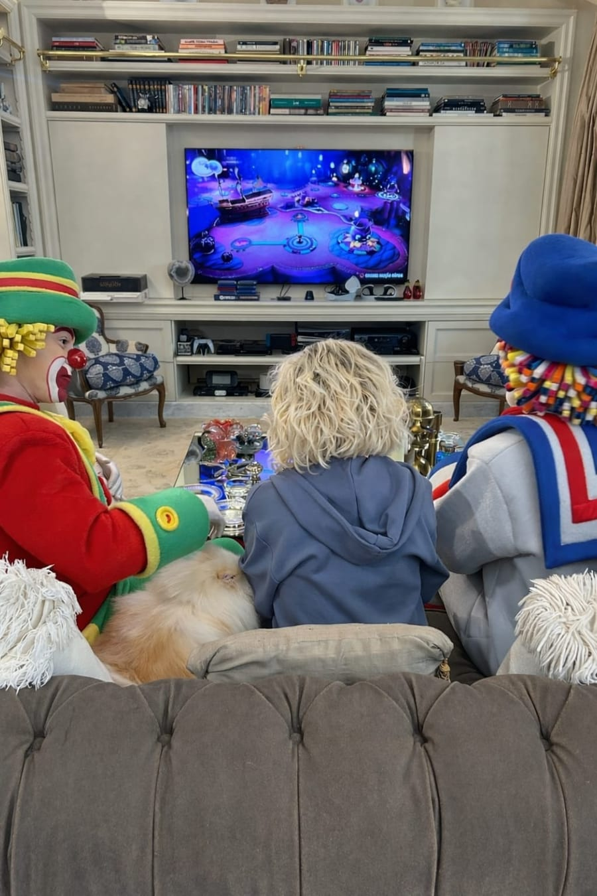

Ana Maria Braga & Frutap
Branded content · 2025 · Assistência de produção, câmera, teleponto e pós-produção
Participei da produção de branded content para as redes sociais oficiais de Ana Maria Braga, em parceria com a Frutap. Atuei no set e na finalização, da montagem de iluminação e operação de câmera e teleponto ao tratamento de imagem, legendagem, publicação e análise de desempenho.
Assistir ao vídeo ↗Sobre o projeto
Conteúdo vertical produzido para as redes sociais oficiais de Ana Maria Braga em parceria com a Frutap. A entrega reuniu preparação de set, captação com teleponto e finalização do material para publicação em formato de Instagram Reels.
Minha atuação no set
Fui responsável pela montagem do maquinário de iluminação, pelo posicionamento e operação de câmera e pela instalação e operação do teleponto durante a gravação. Também coordenei a logística da equipe ao longo da diária de produção.
Da captação à publicação
Na pós-produção, realizei o tratamento final da imagem, a legendagem e a preparação e publicação do conteúdo nas plataformas digitais da apresentadora. Depois da entrega, acompanhei o desempenho da publicação por meio do Instagram Analytics.